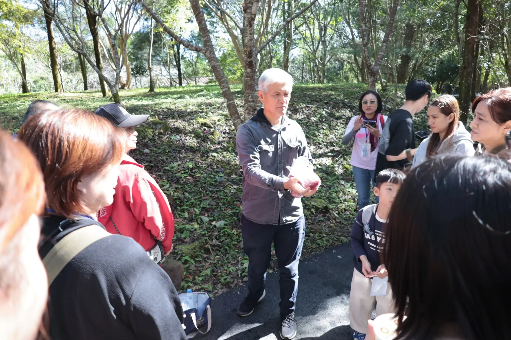

FOUNDER · 部落自主經營Tribe-run族人，是這個地方真正的主人Our people are the true owners of this place
山莎蔓岸是部落自己成立的合作社， 發起人是世代居住於大隘部落的賽夏族人。 所有獲利留在部落、所有故事都是親身經歷 — 我們不會聘演員、也沒有表演動作， 你看到的是這片土地上真正在生活的人。 SamSamma is a co-op founded by the tribe itself, started by Saisiyat people who have lived in the Daai tribe for generations. All profit stays in the tribe, and every story is lived firsthand — we hire no actors and stage no performances; what you see are real people who actually live on this land.
四位族人取得專業證照， 文化傳承不是給遊客看的劇場，是日常的師徒制傳承。 Four community members hold professional licenses; cultural heritage here isn't theater for tourists, but everyday master-to-apprentice transmission.